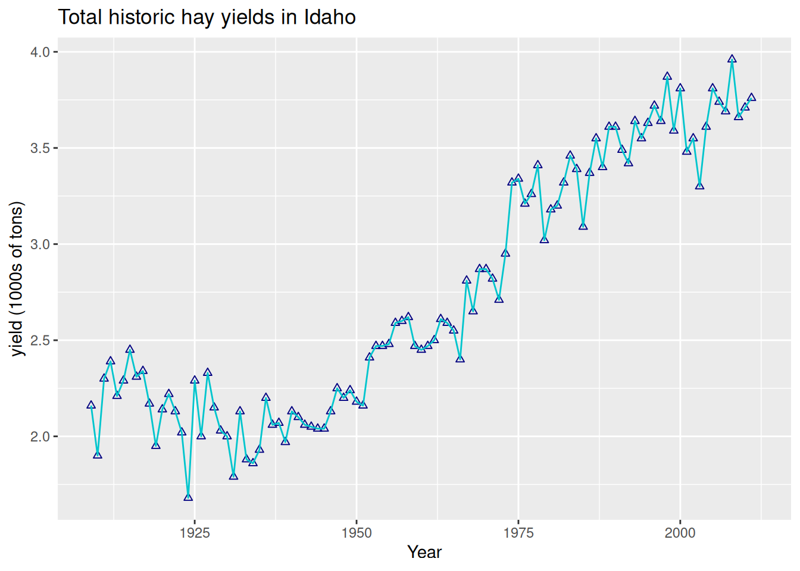
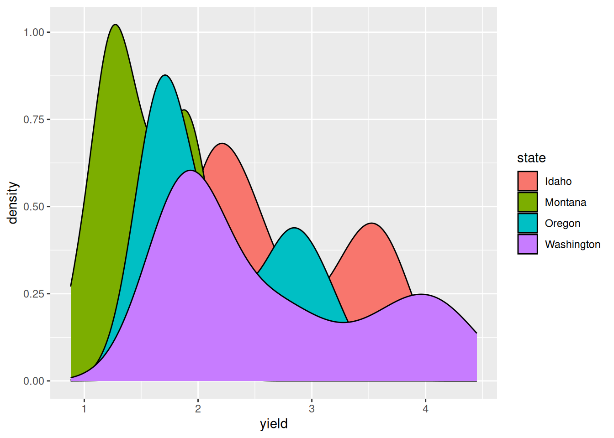
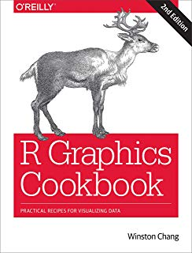

library(dplyr)
library(ggplot2)Publication-Quality Plots with ggplot2
Learning Goals
At the end of this lesson, you should:
- understand how to construct a ggplot
- understand that a ggplot is composed of layers
- know how to map data set information to a ggplot
- be able to save a ggplot to your file system
Data and packages
We will load ggplot2, which will automatically load a useful package of color palette, RColorBrewer. The package dplyr is also loaded since we will need to use some of their functions to prepare the data for plots.
The data set, “nass.hay” is from the agridat package. It is historic data on hay production across U.S. states from 1909 to 2012 gathered by the National Agricultural Statistics Service. This script also creates a data object only containing data from Idaho, and a data object with hay production stats from 2012.
The package ‘agridat’ is needed for this lesson.
if(!require(agridat)) {
install.packages("agridat")
library(agridat)}agridat is a package consisting solely of several hundred agricultural data sets, along with example code for data visualiztion or analysis. This is an extraordinary resource! This lesson will use a data set from the National Agricultural Statistics Service (NASS). This is hay yields between 1909 and 2012 for by state (in the US). Some states do not have Ha
data("nass.hay")
str(nass.hay)'data.frame': 5044 obs. of 4 variables:
$ year : int 1909 1909 1909 1909 1909 1909 1909 1909 1909 1909 ...
$ state: Factor w/ 49 levels "Alabama","Alaska",..: 1 3 4 5 6 7 8 9 10 11 ...
$ acres: num 275000 98000 409000 2503000 1180000 ...
$ yield: num 0.96 2.42 1.05 1.61 1.73 1.15 1.22 0.69 0.86 2.16 ...summary(nass.hay) year state acres yield
Min. :1909 Alabama : 104 Min. : 6900 Min. :0.250
1st Qu.:1935 Arizona : 104 1st Qu.: 370000 1st Qu.:1.228
Median :1961 Arkansas : 104 Median : 998500 Median :1.700
Mean :1961 California : 104 Mean :1368800 Mean :1.867
3rd Qu.:1987 Colorado : 104 3rd Qu.:2050000 3rd Qu.:2.240
Max. :2012 Connecticut: 104 Max. :5964000 Max. :8.160
(Other) :4420 NA's :48 head(nass.hay) year state acres yield
1 1909 Alabama 275000 0.96
2 1909 Arizona 98000 2.42
3 1909 Arkansas 409000 1.05
4 1909 California 2503000 1.61
5 1909 Colorado 1180000 1.73
6 1909 Connecticut 387000 1.15First, let’s create a few smaller data sets by filtering the data by different conditions.
# all observations from Idaho
hay_idaho <- filter(nass.hay, state == "Idaho")
# all observations for 2012
hay2012 <- filter(nass.hay, year == 2012)
# all observations for Idaho, Oregon, Washinton and Montana
hay_pnw <- filter(nass.hay, state %in% c("Oregon", "Washington", "Montana","Idaho")) |>
mutate(state = as.character(state)) Building a ggplot
A ggplot needs 3 parts:
- data
- aesthetics which connect or map the data to the geom
- a type of plot, or geom, to implement
Note:
- ggplot2 uses the
+notation in their plots (see below). It’s my understanding that there is some regret over this style decision by the ggplot authors, but it is now an accepted convention. - ggplot2 also uses non-standard evaluation, so, often column names do not need to be quoted
- common mapping aesthetics:
- x (the x variable)
- y (the y variable)
- col (color for lines, points, outlines)
- fill (color when something has a fill color such as a boxplot)
- group (when a plotted option should be grouped, then plotted)
- x (the x variable)
build a simple plot
Goal: plot yield over time for hay production in Idaho
Here is what the final plot will look like:

Step 1: Add the data
ggplot(hay_idaho)
There is not much to see here since we have not specified anything beyond the data set to use.
Step 2: Add aesthetics
ggplot(hay_idaho, mapping = aes(x = year, y = yield))
This step mapped “year” and “yield” from the hay_idaho data set to the x and y axes, respectively. Nothing is plotted because we have not specified what type of plot geom we want.
Step 3: Add a geom
(explicit mapping command dropped - use a positional argument instead)
ggplot(hay_idaho, aes(x = year, y = yield)) +
geom_line(na.rm = TRUE)
We can ignore this warning telling us there is missing data. That happens when using NASS data!
Question: What happens if we use |> instead of +?
(try it to find out)
Common plot improvements
plot title and axis labels
ggplot(hay_idaho, aes(x = year, y = yield)) +
geom_line(na.rm=TRUE) +
ggtitle("Total historic hay yields in Idaho") +
xlab("Year") +
ylab("yield (1000s of tons)")Change line settings
(and other geom arguments)
ggplot(hay_idaho, aes(x = year, y = yield)) +
geom_line(color = "turquoise3", linewidth = 1, linetype = 1, na.rm=TRUE) +
ggtitle("Total historic hay yields in Idaho") +
xlab("Year") +
ylab("yield (1000's of tons)")
The default line type is “1”, which is a plain line. There are other types:

Other common geoms:
points
ggplot(hay_idaho, aes(x = year, y = yield)) +
geom_point(shape = 2, col = "navy", na.rm=TRUE) +
ggtitle("Total historic hay yields in Idaho") +
xlab("Year") +
ylab("yield (1000s of tons)")
There are many options for the type of plotting character (“pch” in base R plotting and “shape” in ggplot):

The default shape is “1” (the circle). Plotting symbols 21 - 25 have outline color and fill attributes, while the other symbols only take a single color argument.
area
ggplot(hay_idaho, aes(x = year, y = yield)) +
geom_area(fill = "orange", col = "gray20", na.rm=TRUE) +
ggtitle("Total historic hay yields in Idaho") +
xlab("Year") +
ylab("yield (1000s of tons)")
boxplot
ggplot(hay_pnw, aes(x = state, y = yield)) +
geom_boxplot(na.rm=TRUE) +
ggtitle("Yearly hay yields in the Pacific Northwest") +
xlab("State") +
ylab("yield (1000s of tons)")
Color all boxplots the same:
ggplot(hay_pnw, aes(x = state, y = yield)) +
geom_boxplot(fill = "yellow", na.rm=TRUE) +
ggtitle("Yearly hay yields in the Pacific Northwest") +
xlab("State") +
ylab("yield (1000s of tons)")Color boxplots by state:
(This requires an aes statement)
ggplot(hay_pnw, aes(x = state, y = yield, fill = state)) +
geom_boxplot(na.rm=TRUE) +
ggtitle("Yearly hay yields in the Pacific Northwest") +
xlab("State") +
ylab("yield (1000s of tons)")
Question: What happens if we specify “color = state” instead of “fill = state”?
(Try it and find out).
Note
Aesthetic statements (those wrapped in aes()) can be made in the first ggplot argument or within a specific geom. These two examples are equivalent:
example
ggplot(mydata, aes(x, y)) +
geom_line()example 2
ggplot(mydata) +
geom_line(aes(x, y))The aes() argument is sometimes specified within a geom if a particular aesthetic changes between geom (e.g. the fill aesthetic changes). Otherwise, the default aesthetic is whatever was previously specified.
histograms and density plots:
ggplot(hay_idaho, aes(x = yield)) +
geom_histogram(fill = "gray70", col = "black", bins = 20, na.rm=TRUE)
Unlike in base R plotting, creating a density plot and shading the are under the curve is easy.
ggplot(hay_pnw, aes(x = yield, fill = state)) +
geom_density(na.rm=TRUE)
In this plot, it is hard to see what is going on since the each distribution covers up the one plotted before it (so we can’t really see Idaho, but Washington’s hay yield distribution is clear). The attribute “alpha” can be used to add a transparency to colors. The code is alpha = n where n is the proportion of the color that is shown (0 is completely transparent and 1 is no transparency).
ggplot(hay_pnw, aes(x = yield, fill = state)) +
geom_density(alpha = 0.5, na.rm=TRUE)Combining geoms
Geoms are best thought of as plotting layers. Additional geoms can be added to a single plot, adding additional layers of information. Each geom is added to the plot in the order it is specified in the ggplot statement.

Adding an overall of points over boxplots is a good way to summarise the empirical distribution of a large number of data points:
ggplot(hay_pnw, aes(x = state, y = yield, fill = state)) +
geom_boxplot(na.rm = TRUE) +
geom_point(na.rm = TRUE) +
ggtitle("Yearly hay yields in the Pacific Northwest") +
xlab("State") +
ylab("yield (1000s of tons)")In this example, it is likely there is over-plotting of data since each state has 104 data point associated with it. The geom geom_jitter() can be used to jiggle overlapping points. Points can be jittered in the vertical and horizontal direction. In this case, jittering in the horizontal direction will result in no change in the interpretation since the y-axis indicates actual value associated with each point.
ggplot(hay_pnw, aes(x = state, y = yield, fill = state)) +
geom_boxplot(na.rm = TRUE) +
geom_jitter(width = 0.2, height = 0, na.rm = TRUE, alpha = 0.7) +
ggtitle("Yearly hay yields in the Pacific Northwest") +
xlab("State") +
ylab("yield (1000s of tons)")
Other common plotting options
Faceting
Sometimes, it is useful to create a set of similar plots with the same scaling. Facets are useful for this purpose.
For an example, below is a plot of the distributions from above using facet_grid().
ggplot(hay_pnw, aes(x = yield)) +
geom_density(col = "blue", fill = "dodgerblue", alpha = 0.6, na.rm = TRUE) +
facet_grid(. ~ state) # for a horizontal facetggplot(hay_pnw, aes(x = yield)) +
geom_density(col = "darkgreen", fill = "springgreen3", alpha = 0.6, na.rm = TRUE) +
facet_grid(state ~ .) # for a vertical facet
Faceting can also be done be used to create a grid of plots with facet_wrap():
ggplot(hay_pnw) +
geom_line(aes(x = year, y = yield), col = "darkcyan", na.rm=TRUE) +
facet_wrap(. ~ state, nrow = 2, ncol = 2)
Representing error information
Example: create a band indicates the minimum and maximum range of values
hay_yearly <- nass.hay |> group_by(year) |>
summarise(Yield = mean(yield), yield_min = min(yield), yield_max = max(yield))
ggplot(hay_yearly, aes(x = year)) +
geom_ribbon(aes(ymin = yield_min, ymax = yield_max), fill = "gray70", na.rm=TRUE) +
geom_line(aes(y = Yield), linewidth = 0.8, na.rm=TRUE)Example: add error bars
Two other plot adjustments included: * indicate the range of numbers that the y-axis should span * flip the x and y axes
hay_pnw_summary <- hay_pnw |> group_by(state) |>
summarise(Yield = mean(yield, na.rm = T), yield_sd = sd(yield, na.rm = T))
ggplot(hay_pnw_summary, aes(y = state)) +
geom_errorbar(aes(xmin = Yield - yield_sd, xmax = Yield + yield_sd), width = 0.2) +
geom_point(aes(x = Yield), shape = 18, size = 5, col = "blue") +
# set the limits (lower and upper bounds for the x-axis)
xlim(c(0, 3.7)) +
ylab("") 
Add regression lines to a plot
P <- ggplot(hay_idaho, aes(x = acres, y = yield)) +
geom_point(shape = 16, alpha = 0.6, size = 2.5, na.rm=TRUE)
P # Plots can be assigned to an object and then later added toP +
geom_smooth(method = "lm", na.rm=TRUE) +
geom_smooth(method = "loess", col = "yellowgreen", na.rm = TRUE)`geom_smooth()` using formula = 'y ~ x'
`geom_smooth()` using formula = 'y ~ x'
Adjusting non-data items
- Adjustments to the background, text size and other details are done in the
theme()argument command. - the complete list of option is available in the ggplot2 documentation
- there are several pre-built themes:

Implementing a ggplot theme
facet.plot <- ggplot(hay_pnw) +
geom_line(aes(x = year, y = yield), col = "darkcyan", na.rm=TRUE) +
facet_wrap(. ~ state, nrow = 2, ncol = 2)
facet.plot + theme_minimal() 
This is not exactly what I want. Larger labels on everything would be helpful, as well as an outline around each plot. And while we are at it, labeling the x-axis for each decade rather than every 25 years would be easier to interpret.
Adjusting text size
facet.plot +
theme_minimal() + # the theme must be added to plot *before* manual theme adjustments
theme(
axis.title = element_text(size = 14),
axis.text = element_text(size = 13)
)
Adjusting the axis and gridlines
facet.plot +
scale_x_continuous(breaks = c(seq(1910, 2015, by = 10))) +
theme_minimal() +
theme(
axis.title = element_text(size = 14),
axis.text = element_text(size = 13)
) 
It looks like the years are spaced too close together and there are too many grid lines. This can all be fixed.
facet.plot +
scale_x_continuous(breaks = c(seq(1910, 2015, by = 10))) +
theme_minimal() + # this must be added to plot before manual theme adjustments
theme(
axis.title = element_text(size = 14), # adsjut title of the axes
axis.text = element_text(size = 13), # adjust axes tick labels
axis.text.x = element_text(angle = 45, hjust = 1), # adjust individual axis tick labels
panel.grid.minor = element_blank(), # remove minor grid lines (the major grid lines were retained)
panel.border = element_rect(colour = "black", fill = "transparent"), # create a border around each panel
strip.text = element_text(size = 15) # adjust panel labels (e.g. "Idaho")
) 
Adjusting the legend
ggplot(hay_pnw) +
geom_line(aes(x = year, y = yield, col = state), na.rm = TRUE) +
# set the scale for x-axis (yer)
scale_x_continuous(breaks = c(seq(1910, 2015, by = 10))) +
theme_bw() 
This looks okay, but it could be better. There is room to put the legend inside the plot and the text should probably be larger. Also, the legend title is not really needed.
ggplot(hay_pnw) +
geom_line(aes(x = year, y = yield, col = state), na.rm = TRUE) +
scale_x_continuous(breaks = c(seq(1910, 2015, by = 10))) +
theme_bw() +
theme(
legend.position = c(0.15, 0.8), # give exact coordinates (ranging from 0 to 1)
legend.background = element_rect(colour = "black"),
legend.text = element_text(size = 12),
legend.title = element_blank()
)Warning: A numeric `legend.position` argument in `theme()` was deprecated in ggplot2
3.5.0.
ℹ Please use the `legend.position.inside` argument of `theme()` instead.
The legend can also be moved to locations outside the main plotting area with arguments such as legend.position = "top", legend.position = "left" and so on.
Summary
There are many options for adjusting elements of a ggplot. You you will inevitable need to consult help files at some point.
A bit on colors
R has a rich set of colors and some excellent palettes that provide excellent contrast and/or work for color-blind individuals. Several are automatically loaded with ggplot2, such as the RColorBrewer:
library(RColorBrewer)
display.brewer.all()
The package viridis also has some nice color palettes that are widely used. Also check out the paletteer and the accompanying R palette picker for a wider set of options.
Other Important Stuff
How to save plots
- The function
ggsave()is the recommended approach. - By default, it will save the the last plot created.
ggplot(hay_pnw) +
geom_line(aes(x = year, y = yield), col = "violetred", na.rm=TRUE) +
facet_wrap(. ~ state, nrow = 2, ncol = 2) +
theme_linedraw()ggsave("PNW_hay_production.png", dpi = 300)- other acceptable formats:
- .jpeg
- .tiff
- .bmp
- .svg
- .wmf (on windows machines)
- .eps
- .ps
- .tex
- .pd
- can specify the size of the saved plot (in centimeters, millimeters or inches) and the resolution in DPI (dots per square inch)
Other great geoms
| geom | purpose |
|---|---|
geom_violin() |
violin plot |
geom_ribbon() |
horizontal filled undulating band |
geom_bar() |
for creating bar plots |
geom_abline(), geom_hline(), geom_vline() |
for adding straight lines to a plot |
geom_map() |
part of the rich ecosystem of ggplot mapping functions |
geom_rug() |
adds rug plots to edges of a plot |
Here is the compplete list of ggplotting options available in ggplot2.
ggplot extensions
Many packages have been developed to extend ggplot’s functionality. Here are a few notable examples:
ggridge
# break hay data into decennial increments (roughly)
nass.hay$decade <- cut(nass.hay$year, breaks = c(1900, 1920, 1930, 1940, 1950, 1960, 1970, 1980, 1990, 2000, 2020), labels = c("pre-1920", "1920s", "1930s", "1940s", "1950s", "1960s", "1970s", "1980s", "1990s", "2000s"))
library(ggridges); library(viridis)
ggplot(nass.hay, aes(x = yield, y = reorder(decade, desc(decade)), fill = after_stat(x))) +
geom_density_ridges_gradient(rel_min_height = 0.001) +
scale_fill_viridis(direction = -1) +
ylab("") # suppress the y-axis labelplotly
library(plotly)
pl <- ggplot(nass.hay, aes(x = year, y = yield, color = acres)) +
geom_point(na.rm = TRUE) +
geom_point(aes(text = state), na.rm = TRUE) +
scale_color_gradientn(colors = alpha(rainbow(10), 0.5)) +
theme_bw()
ggplotly(pl)To save an interactive plot, use htmlwidgets::saveWidget().
gganimate example
Plot from “Learn gganimate”.
Other resources
vignette("ggplot2")- There are innumerable ggplot tutorials like this one on the interwebs, such as this one, this one, and this one, among many others.
- ggplot-focused data visualization workshop by Cédric Scherer.
- R Graphics Cookbook Online Book, which is also a purchasable book. This is written by Winston Chang, one of the main authors of the ggplot2 package. It is a very helpful resource for consulting.

ggplot can be fun
Plot of shots made by NBA Player Steph Curry, made using gganimate:

Putting it all together
ggplot is part of the Tidyverse, despite having different conventions, like the use of the “+” operator for adding plot layers. You can take Tidyverse output from piped operations and pipe that directly into a ggplot:
mydata |> filter(var == "some_conditions") |>
ggplot(...)